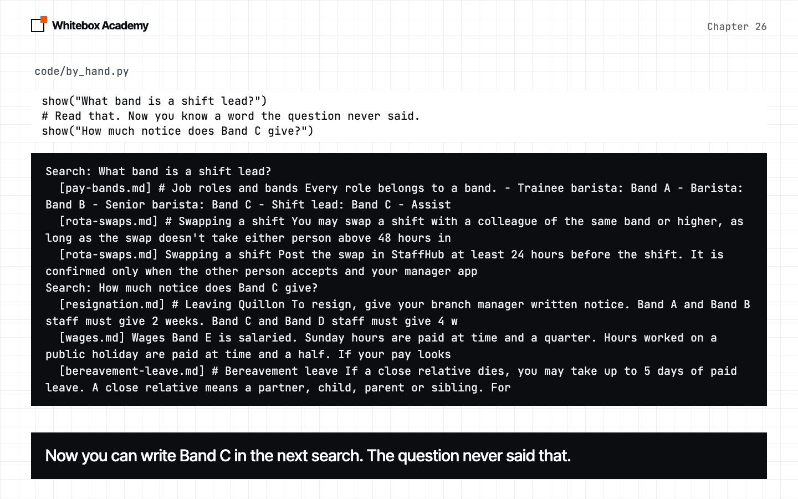
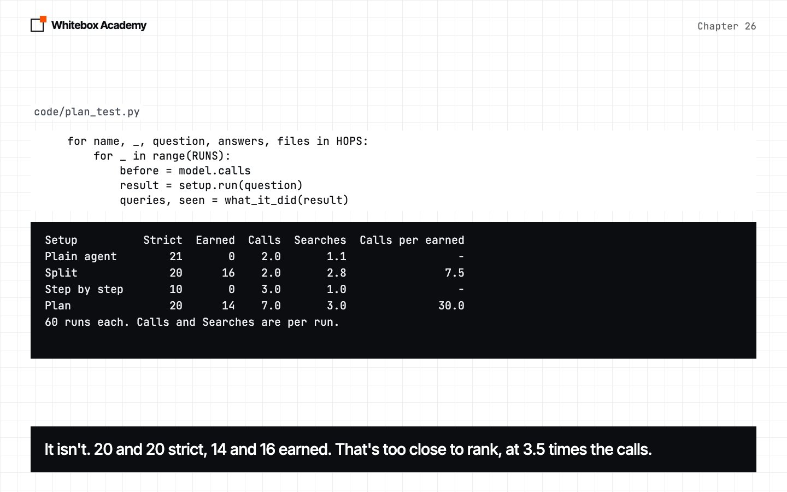
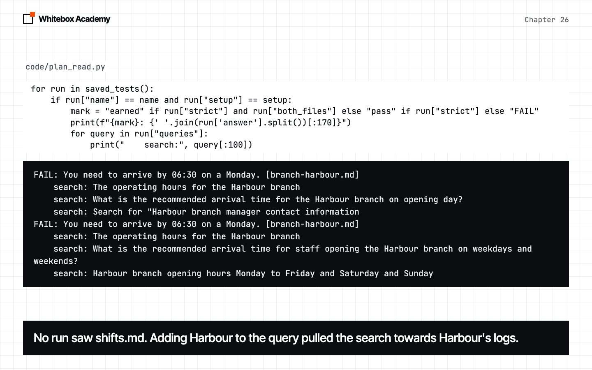

Planning patterns
Write a plan, search step by step using what earlier steps found, and measure what that buys and what it costs.
Two-fact questions still fail
“How much notice must a shift lead give?” needs the shift lead’s band, and then the rule for that band.
In chapter 23 the agent almost never searched twice, so Split forced the searches in code. But Split writes every search before it has seen a single result. This chapter tries the next step: search, read, then write the next search. The model writes the steps, and your code makes sure each one happens. The result isn’t the one you’d hope for, so read it for the method as much as for the pattern.
Start Ollama, activate the .venv from chapter 05, and work in chapters/26-planning-patterns/code. whitebox/planning.py is the only new framework file, and agent.py doesn’t change. hop_setups.py is provided, and results/ holds our saved tests, so you can follow the whole chapter without running them. python3 -m pytest tests should show 77 passed.
Two facts, six tries
The answer needs pay-bands.md and resignation.md. The script asks the plain agent and Split three times each, and cuts answers at 100 characters. Predict: how many of the six runs see both files?
$ python3 two_facts.py
Plain agent
Searched: shift lead resignation notice period
Files: breaks-and-staff-drinks.md resignation.md shifts.md
Answer: As a shift lead, you must give your resignation notice according to your Band level. Band A and Band
Searched: shift lead resignation notice
Files: resignation.md rota-swaps.md shifts.md
Answer: As a shift lead, you must give your resignation notice based on your Band level. Band A and Band B s
Searched: shift lead resignation notice period
Files: breaks-and-staff-drinks.md resignation.md shifts.md
Answer: As a shift lead, you must give your resignation notice according to your band. Band A and Band B sta
Split
Searched: What is the notice period required for shift leads in the staff handbook? | What are the resignation policies for management roles in the staff handbook? | What are the specific requirements for notice periods when resigning from a shift lead position?
Files: breaks-and-staff-drinks.md forms.md resignation.md rota-swaps.md shifts.md welcome.md
Answer: You must give 2 weeks' notice as a shift lead, which would be Band A or Band B based on the informat
Searched: What is the notice period required for shift leads to resign according to the staff handbook? | What group does the shift lead position fall under in the staff handbook? | What are the resignation procedures outlined for shift leads in the staff handbook?
Files: breaks-and-staff-drinks.md pay-bands.md resignation.md rota-swaps.md shifts.md
Answer: You must give 4 weeks' notice when you resign, as you are in Band C. [resignation.md]
Searched: When must a shift lead provide notice of resignation? | What is the notice period required for a shift lead? | Are there specific guidelines for notice periods in the staff handbook for shift leads?
Files: breaks-and-staff-drinks.md resignation.md rota-swaps.md shifts.md
Answer: You must give 8 weeks' notice when you resign, as you are Band E staff. [resignation.md]
This is real output from qwen2.5:7b. One of six. The agent listed the bands. Split gave three answers: 2 weeks, 4 weeks and 8 weeks. Only the run that saw pay-bands.md was right.
None of Split’s searches could say “Band C”, because nothing had been read when they were written. Try it the way a person would, reading the first result before writing the second. Hits are cut at 150 characters.
$ python3 by_hand.py
Search: What band is a shift lead?
[pay-bands.md] # Job roles and bands Every role belongs to a band. - Trainee barista: Band A - Barista: Band B - Senior barista: Band C - Shift lead: Band C - Assist
[rota-swaps.md] # Swapping a shift You may swap a shift with a colleague of the same band or higher, as long as the swap doesn't take either person above 48 hours in
[rota-swaps.md] Swapping a shift Post the swap in StaffHub at least 24 hours before the shift. It is confirmed only when the other person accepts and your manager app
Search: How much notice does Band C give?
[resignation.md] # Leaving Quillon To resign, give your branch manager written notice. Band A and Band B staff must give 2 weeks. Band C and Band D staff must give 4 w
[wages.md] Wages Band E is salaried. Sunday hours are paid at time and a quarter. Hours worked on a public holiday are paid at time and a half. If your pay looks
[bereavement-leave.md] # Bereavement leave If a close relative dies, you may take up to 5 days of paid leave. A close relative means a partner, child, parent or sibling. For
That’s the new idea: a later search can use what an earlier step found.

Write a plan, then carry it out
make_plan asks for the facts to look up, in order, at most three, and clean removes the bullets and numbering at the start of each line, and any quotes around it. Predict: will the first plan say to find the band?
$ python3 first_plans.py
I'm a shift lead. How much notice must I give when I resign?
- Review the resignation policy outlined in the staff handbook
- Check if the handbook specifies a notice period for shift leads
- Determine if there are any exceptions or special conditions for resignation
I'm opening the Harbour branch on a Monday. What time do I need to arrive?
- The opening hours for the Harbour branch on Monday
- The address and location of the Harbour branch
- The standard opening time for new branches
No. It’s tidy, and it would fit nearly any question. Now run carries it out:
- The first step is searched as it’s written.
- Each later step gets a new search, written by the model from the step and everything known so far. This is what
Splitdoesn’t have. - After each search, the model writes a one-sentence note, or “not found”.
- The last call answers from all the hits and all the notes.
Your code owns the loop, so the model can’t stop early. We ran it four times, and it was right once. Here are the first two runs, in the order they came.
$ python3 plan_once.py
Step: Review the staff handbook for the resignation policy
Query: Review the staff handbook for the resignation policy
Found: Band E staff must give 8 weeks' notice when resigning.
Step: Identify the specific section related to shift leads
Query: Band E staff resignation notice period
Found: not found
Step: Check if there are any exceptions or additional requirements for shift leads
Query: shift leads resignation notice period Band E
Found: not found
Files: annual-leave.md log-old-mill-2025-04.md log-station-2025-03.md pay-bands.md resignation.md shifts.md wages.md
Answer: You must give 4 weeks' notice when resigning, as a shift lead is categorized under Band C, and Band C staff must give 4 weeks' notice according to the resignation guidelines. [resignation.md]
Model calls: 7
$ python3 plan_once.py
Step: Review the resignation policy outlined in the staff handbook
Query: Review the resignation policy outlined in the staff handbook
Found: Band E staff must give 8 weeks' notice of resignation.
Step: Check if the handbook specifies a minimum notice period for shift leads
Query: Band E staff notice period shift leads
Found: not found
Step: Determine if there are any additional clauses for resignations by shift leads
Query: Band E staff resignation notice period
Found: not found
Files: annual-leave.md log-old-mill-2025-04.md resignation.md shifts.md wages.md
Answer: You must give 8 weeks' notice when you resign, as you are Band E staff. [resignation.md]
Model calls: 7
- The chain worked. The second query uses what the first step found.
- What it carried was wrong. The excerpt listed every band, and the note kept only “Band E”.
- The first run was right by luck. No step asked for the band. One search happened to bring back
pay-bands.md, as its third hit. - The second run missed that file, and said 8 weeks, twice what’s right.
Plan against Split
Four setups, six hop questions, two batches of five runs. Step by step has Plan’s notes and no plan: the model chooses the next search or says DONE.
Strict is chapter 23’s check. Earned means strict, and the searches saw both files, so the answer could have come from the facts. That’s about 420 model calls a batch, so our runs are saved. Predict: Plan makes 7 calls and Split makes 2. How much better is Plan?
$ python3 plan_scores.py
Setup Strict Earned Calls Searches Calls per earned
Plain agent 21 0 2.0 1.1 -
Split 20 16 2.0 2.8 7.5
Step by step 10 0 3.0 1.0 -
Plan 20 14 7.0 3.0 30.0
60 runs each. Calls and Searches are per run.
$ python3 plan_scores.py batches
Setup Strict Earned (first batch, second batch, 30 runs each)
Plain agent 11, 10 0, 0
Split 10, 10 8, 8
Step by step 5, 5 0, 0
Plan 10, 10 8, 6

Plandidn’t beatSplit. 20 and 20 strict, 14 and 16 earned. That’s too close to rank, at three and a half times the calls.- Forced searches earned something. 16 and 14, against 0 and 0.
- Left to the model, it searched about once. Step by step wrote
DONEafter one search in all 60 runs. - The cost. A three-step plan is 7 calls: 1 plan, 3 notes, 2 queries, 1 answer. Each earned pass cost
Split7.5 calls andPlan30.
Question by question
$ python3 plan_scores.py questions
Strict / earned, out of 10 runs
Question Plain agent Split Step by step Plan
harbour-arrive 0 / 0 2 / 2 0 / 0 0 / 0
senior-beans 2 / 0 0 / 0 0 / 0 1 / 0
riverside-repair 8 / 0 4 / 4 0 / 0 4 / 2
shift-lead-pay 0 / 0 2 / 2 0 / 0 4 / 4
lead-notice 1 / 0 4 / 2 2 / 0 6 / 4
old-mill-repair 10 / 0 8 / 6 8 / 0 5 / 4
Needs both, of 40 3 / 0 8 / 6 2 / 0 11 / 8
The two repair questions aren’t really hops, because each branch file holds the number. “Earned” is too harsh there. The plain agent is the best setup on them, 18 of 20 at 2 calls, against 12 for Split and 9 for Plan. On the four questions that do need both files, Plan earned 8 and Split 6, of 40. That can’t be ranked.
Unearned passes show why the column matters:
$ python3 plan_read.py senior-beans "Plain agent" pass: As a senior barista, you get 25% off retail beans when you are off shift and using your staff card at any branch. [staff-discount.md] $ python3 plan_read.py lead-notice Split pass: You must give 4 weeks' notice when you resign as a Band C or Band D staff member. [resignation.md] $ python3 plan_read.py riverside-repair pass: I don't know. [branch-riverside.md] doesn't provide the contact number for equipment service, only that the contractor is Northline Service, 0300 555 0177.
The third says “I don’t know”, gives the number anyway, and passes the strict check. We read all 71 strict passes, and the earned ones hold up.
Read the plans
Maybe Plan found both files because it planned well. Here’s a count of the 60 saved plans.
$ python3 plan_plans.py
Plans in all: 60
Mention the handbook, a section or a policy: 35
Three questions that turn on a band: 30 plans
name the band: 0
earned anyway: 8
harbour-arrive: 10 plans
name the arrival time: 7
earned: 0
None of the 30 band plans says “band”, and they earned 8. Seven harbour-arrive plans name the arrival time, and that question earned none. It’s a rough word count, and “handbook” comes partly from our prompt. Judge some for yourself. Steps are cut at 90 characters.
$ python3 plan_plans.py shift-lead-pay
earned
Review the introduction section of the staff handbook for general information on pay struc
Check the section detailing roles and responsibilities to find the definition of a shift l
Identify and note the hourly rate associated with the shift lead role
earned
Review the compensation section of the staff handbook
Check the shift lead responsibilities to confirm eligibility
Identify the hourly rate for shift leads as stated in the handbook
earned
Review the staff handbook's compensation section
Check the shift lead role description
Identify the specific hourly rate for shift leads
FAIL
Review the staff handbook's compensation section
Check if the handbook specifies a general pay rate for shift leads
Identify if there are any specific hourly rates mentioned for shift leads
The three that earned each have a step about the shift lead’s role. Across all ten plans for this question, 7 mention roles or responsibilities and 4 of those earned, and the other 3 earned none. So a step’s wording steers the search, whether or not the model meant it to.
This test can’t say where Plan’s earned passes came from. It searches about three times, in new words, with notes. Split searches about three times in new words, with no notes and no plan, and it earned as much. So the gain may come from more searching, not smarter planning. We never ran three generic searches with no plan. Exercise 6 is that test.
What Plan still fails
harbour-arrive: 0 of 10. Here are its first three runs. The rule is in shifts.md, and no run saw it. Adding “Harbour branch” to the query, from what was known, pulled the search towards Harbour’s logs. Split saw that file in 4 of 10 runs.
$ python3 plan_read.py harbour-arrive
FAIL: You need to arrive by 06:30 on a Monday. [branch-harbour.md]
search: The operating hours for the Harbour branch
search: What is the recommended arrival time for the Harbour branch on opening day?
search: Search for "Harbour branch manager contact information
FAIL: You need to arrive by 06:30 on a Monday. [branch-harbour.md]
search: The operating hours for the Harbour branch
search: What is the recommended arrival time for staff opening the Harbour branch on weekdays and weekends?
search: Harbour branch opening hours Monday to Friday and Saturday and Sunday
FAIL: You need to arrive by 06:30 on a Monday, as the branch is open from 06:30 to 16:00 on weekdays. [branch-harbour.md]
search: The operating hours for the Harbour branch
search: Harbour branch operating hours Monday to Friday and weekends
search: What is the recommended arrival time for staff at the Harbour branch, considering it is busiest in t

senior-beans: 1 of 10, none earned. Here are its first four runs. Only 2 of 10 saw pay-bands.md. And 64 of Plan’s 180 searches start with “Search for” or similar, or are SQL for a database that doesn’t exist.
$ python3 plan_read.py senior-beans
FAIL: I don't know. [staff-discount.md] mentions discounts for different bands but does not specify a discount for senior baristas.
search: Step 1: Review the employee benefits section of the staff handbook
search: Search for "employee benefits senior barista discount
search: Search for: "employee benefits section requirements for staff discounts
FAIL: I don't know. [staff-discount.md] mentions discounts for different bands but does not specify a discount for senior baristas.
search: Step 1: Check the employee benefits section of the staff handbook
search: Search for "specific discount rate senior baristas retail beans
search: Search for additional terms or conditions associated with the discount
FAIL: You get 30% off retail beans as a senior barista, which corresponds to Band C. [staff-discount.md]
search: Step 1: Review the current employee discount policy
search: senior baristas specific discount staff card branch drinks food retail beans
search: Search for: "staff discounts percentages based on staff band for drinks, food, and retail beans
pass: Band C and Band D get a 25% discount on retail beans. [staff-discount.md]
search: Step 1: Check the employee benefits section of the staff handbook
search: Search for "specific discount details for baristas
search: SELECT * FROM discount_requirements WHERE discount_type = 'drinks' AND guest_accompanied = 'yes' AND
riverside-repair: 4 of 10, 2 earned. The first step usually left out the branch, and 5 of 10 runs never saw branch-riverside.md. The plain agent kept the word “Riverside”, and scored 8 of 10.
A plan can drop what mattered. The search only knows the step, and the step is the model’s rewording.
Does it break easy questions?
8 direct questions and 4 with no answer, three runs each. An unanswerable one passes only if it says “I don’t know”. Predict: does a longer process make it invent an answer?
$ python3 plan_control_scores.py
Setup Direct Unanswerable Total Calls
Plain agent 24/24 12/12 36/36 2.0
Split 24/24 12/12 36/36 2.0
Step by step 24/24 12/12 36/36 3.0
Plan 24/24 12/12 36/36 7.0
All four scored 36 of 36, and we read the answers. Plan did no harm, and no good: it paid 7 calls for what 2 calls got.
| Claim | Our evidence |
|---|---|
| Forcing the searches in code gets both files, and leaving it to the model didn’t | Earned 16 and 14, against 0 and 0, of 60 |
Plan costs 3.5 times Split’s calls | 7 against 2, measured |
Plan did no harm on easy questions | 36 of 36, level with every setup |
Plan beats Split | Not shown. 20 and 20 strict, 14 and 16 earned |
Plan does better where both files are needed | Not shown. 8 against 6 of 40 is too close |
Good plans caused Plan’s passes | Not shown. 0 of 30 named the band, and they earned 8. The test can’t separate planning from more searching |
| Using earlier findings helps | Mixed. It did what it says, and it also carried “Band E” and bent the Harbour search |
This is six questions, one handbook and 60 runs per setup. Two questions aren’t true hops, the strict check was written after reading answers, and a one-sentence note is what lost the list of bands. We tested one 7B model, and a bigger one may well write “find the band”. So don’t read this as “planning doesn’t work”. Run plan_test.py on your own model.
| Your situation | What to try |
|---|---|
| One file holds the answer | The plain agent. It was the best setup on the repair questions, at 2 calls |
| The answer needs two facts, and calls matter | Split, in your code. It earned as much here for 2 calls |
| A later search can’t be written until an earlier one is read | Plan, with the notes read and tested. This is what it’s for, and our test didn’t show it paying off |
| You’re tempted to let the model choose when to stop | Measure first. Here it stopped after one search almost every time |
| Your documents fit in the window | Paste them, as chapter 23 found |
These are real errors
| What happened | What you see | The fix |
|---|---|---|
| Ollama isn’t running | whitebox.models.ModelError: Couldn't reach Ollama | Start Ollama |
You ran plan_read.py with no question | IndexError: list index out of range | Add one: python3 plan_read.py lead-notice |
| You misspelled a question or setup | No error, and nothing printed | Use a name from questions.py, or a setup as written in plan_scores.py’s table |
You wrote Plan(model, index, OPTIONS) | TypeError: cannot use 'tuple' as a dict key (unhashable type: 'dict') | The third argument is k. Write options=OPTIONS |
| The note carried a wrong fact | No error at all. The next query says “Band E” | Print the notes with plan_once.py and read them |
Exercises
From chapters/26-planning-patterns, open exercises.py and complete the five TODOs:
earned: right, and every needed file is in what the search saw.calls_per_earned: what each earned pass cost, orNoneif nothing was earned.drop_label: remove theStep 1:thatcleanleaves in.TidyPlan: aPlanwhose steps have no labels.plans_naming: count the plans that name a word.
Optional: separate the two. Write a FixedPlan(Plan) whose make_plan returns the same three generic steps for every question, add it to build_setups, and run python3 plan_test.py. If it earns as much as Plan, the plan wasn’t doing the work. There’s no worked answer, because we haven’t run it.
Then run python3 -m pytest test_exercises.py from that folder. These checks use a fake model and a fake embedder, so Ollama doesn’t need to be running. You’ve finished when you see 5 passed.
Common mistakes
- Reading a plan as evidence. It looks like thinking. 0 of 30 plans named the band.
- Scoring only the final answer. A run can be right with the second fact never seen.
- Treating a note as a fact. “Band E staff must give 8 weeks” was true, and it was the wrong row.
- Comparing without the cost. A tie on score at 3.5 times the calls is a loss.
- Trusting one batch or one run. Run it again, and don’t rank close scores.
- Using a pattern on every question. The plain agent did better on the questions that needed one file.
- Believing “earned” blindly. It was too harsh on the repair questions.
What you opened
Splitwrites every search before it sees a result.Planwrites up to three steps, searches each one, and rewrites later searches from what’s known, in 7 model calls.- Earned means right, and the searches saw both files.
- Over 60 runs each,
Planscored 20 strict and 14 earned, andSplitscored 20 and 16 at 2 calls. That’s a tie. - The setups that left searching to the model searched about once, and earned nothing.
- Many plans were generic, so the gain may come from more searching, not smarter planning. This test can’t separate them.
- Carrying facts forward cuts both ways: a one-line note kept “Band E”, and a known branch name bent a search away from
shifts.md. - On direct and unanswerable questions, all four setups scored 36 of 36.
A plan that looks good isn’t evidence that planning worked. Measure the searches, the files and the cost.
Asking a model to plan before it acts comes from the 2023 paper Plan-and-Solve Prompting. Using what was found to choose the next search is studied in Interleaving Retrieval with Chain-of-Thought Reasoning. Both used other models and other tests, so measure your own.